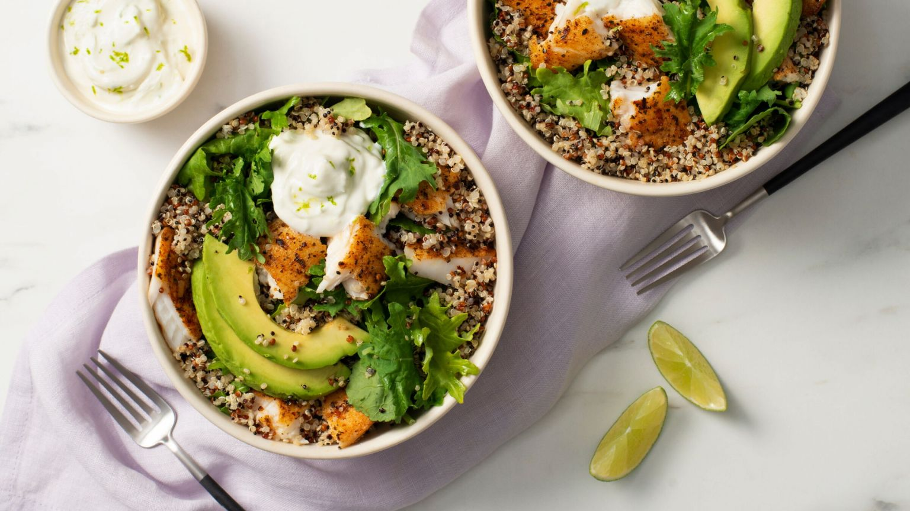

Talapia with Quinoa

Description
Things are getting a little fishy around here! This talapia lunch is a perfect
source of lean protein. A great meal for someone looking to cut fat, but keep from losing
that hard earned muscle! This was a favorite of mine when I was in the "weight cutting" phase
of my last offseason.
Ingredients
- Cooking Oil (Avocado, Coconut or Olive)
- 1 cup quinoa
- 1 talapia filet
- Seasoning for tilapia (chef's choice)
- 2 handfuls of kale
- 1/2 avocado
- Optional: sour cream
- Optional: hot sauce
Steps
- Start quinoa in rice cooker
- Grease pan with cooking oil of choice
- Place tilapia on heated pan, and season top side
- After a few minutes, flip tilapia and season other side
- Immediately after seasoning, throw two handfuls of kale on top of tilapia
- While tilapia finishes cooking, cut up half avocado
- When tilapia is finished, place in bowl with all ingredients
- Optional: Add in sour cream and hot sauce to taste
- Enjoy!